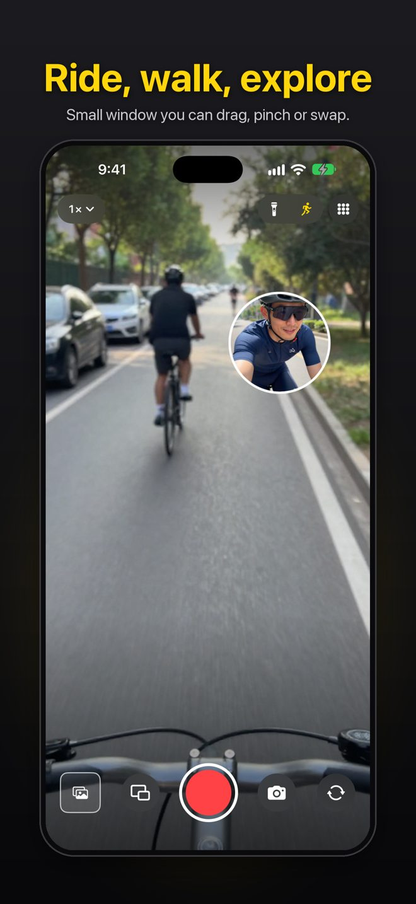
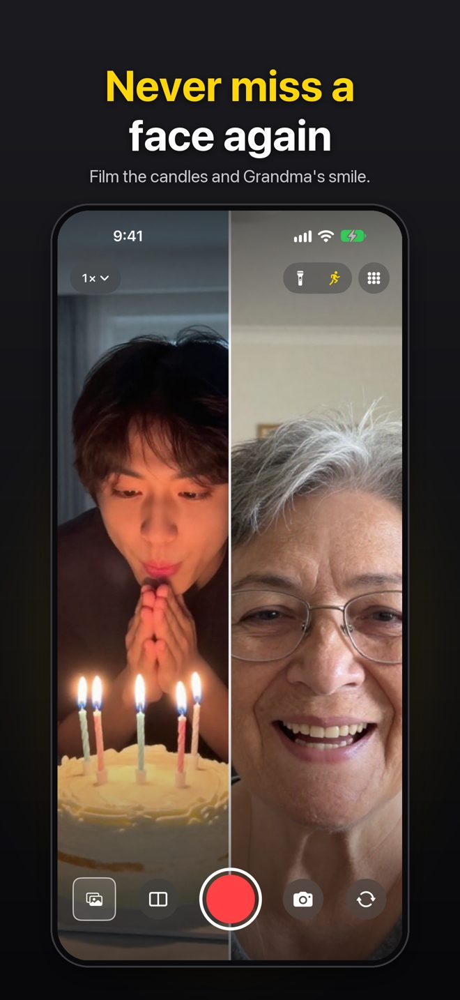
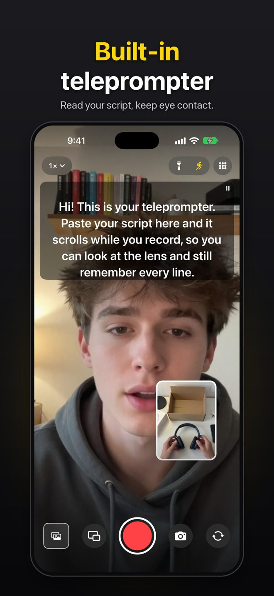
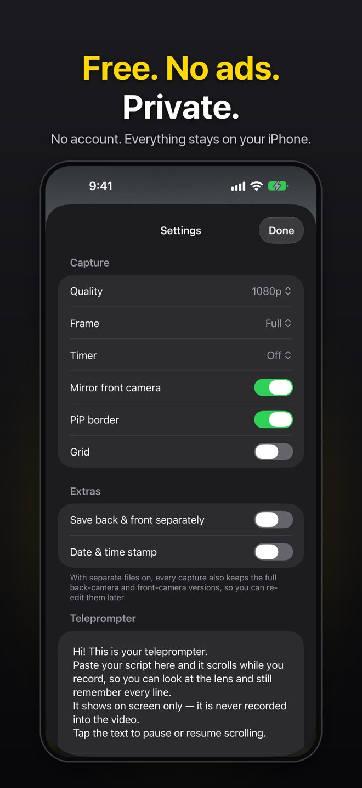

Dual camera video for iPhone
BothWays records with the front and back cameras at the same time, so one video shows what you see and the person filming it.
Both cameras, one video
Point, record, done. The layout is saved right into the video, so there is nothing to edit afterwards.
Your face in a small window over the scene. Drag it to any corner, pinch to resize, double-tap to swap cameras.
Top and bottom, or side by side. Switch layouts while recording and every change is kept.
Ultra wide, wide or telephoto, with exposure, white balance, focus lock and stabilization.
Read your lines while you film. The script stays on your screen and is never recorded.
Dual photos and videos, timer, grid, torch and front mirror. Volume buttons work as the shutter.
No account, no ads, no tracking. Videos stay on your iPhone; saving to Photos is up to you.
See it




Ideas
BothWays has no account and no servers to upload to.
iPhone XS, XR and later, and recent iPads. Apple only allows two cameras at the same time on these models. Older iPhones record one camera at a time.
Yes. No ads, no account and no subscription.
On your iPhone. Saving to Photos is optional, and nothing is uploaded.
Yes. Switch between picture-in-picture and split screen, move or resize the small window, or swap cameras mid-recording. Every change is saved in the video.
No. The text is only on your screen and never appears in the video.
Visit support or email bestappsclub@gmail.com.